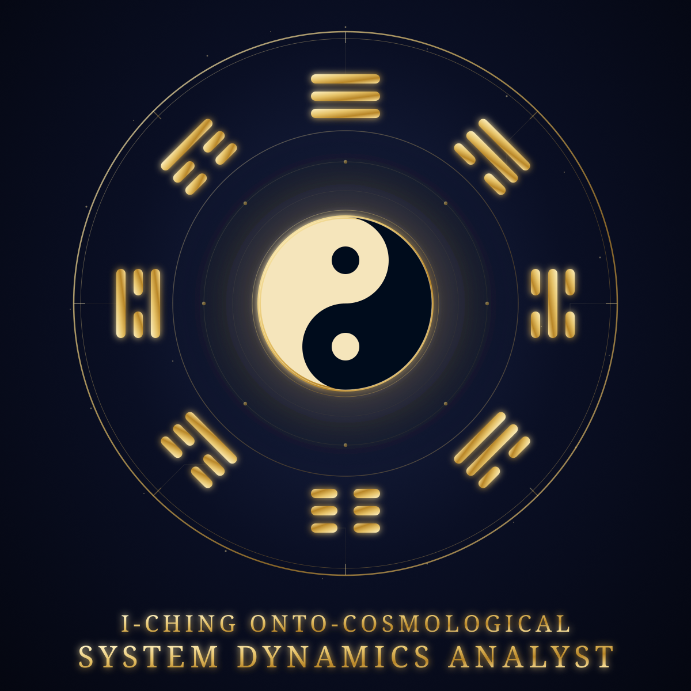

I Ching Onto-Cosmological System Dynamics Analyst
The I Ching was never fortune telling. It's a 5,000-year-old binary code for system dynamics, 64 hexagrams, changing-line transitions, and Shao Yong's deterministic cosmic clock. This Role runs the interpreter entirely on your machine.
No subscription · Secure Stripe checkout Buy Now → Read the Essay
🔒 Private by design · ⚡ Personal installer · ♾️ Full offline usage after activation
Source code, not superstition
Three disciplines fused into one specialist. Full thesis in the companion essay.
What this is
- Systems architect — every situation as states, transitions, feedback loops, phase boundaries
- Cybernetic oracle — same code reads a year, a market, a civilization; micro- and macro-cosm are one loop
- Daoist philosopher — flow, reversal, wu wei as control theory for nonlinear systems near tipping points
- Deterministic clock — Yuan / Hui / Yun / Shi / Nian allocations computed from Shao Yong's tables, not divined
Corpus it reasons over
- I Ching (易经) — 64 hexagrams as complete phase-space of cyclical systems
- Tao Te Ching (道德经) — dynamics of flow, reversal, non-forcing between phases
- Shao Yong's Huangji Jingshi — 129,600 year nested allocation: Epoch → Age → Revolution → Generation → Year
- Fu Xi + King Wen sequences — primordial binary structure vs. manifested situational order
Deterministic computation against structured tables, interpreted through a documented framework. If you want a fortune teller, this will disappoint you. If you want the deepest pattern analysis system ever devised, read on.
See it compute: 2026
A real query. No ritual, a lookup against a 1,000-year-old table, then strategy from the interaction of era + year.
"What is the temporal allocation for 2026?" According to Shao Yong's deterministic table, the year 2026 is allocated as follows: - Yuan: Fu Xi 32 = King Wen 24 Fu (Return) [verified] - Hui: Fu Xi 31 = King Wen 44 Gou (Encountering) [verified] - Yun: Fu Xi 31 = King Wen 44 Gou (Encountering) [verified] - Shi: Fu Xi 29 = King Wen 50 Ding (Cauldron) [verified] - Nian: Fu Xi 47 = King Wen 13 Tong Ren (Fellowship) [verified] Reading: 2026 is a Fellowship year inside the Cauldron era. Shi is the era (30-year generation). Nian is the annual trigger. Strategy: build resilient networks, align with macro-flow, don't force synthetic solutions onto an exhausted system.
Macro mode, read the era
Geopolitics, macro-history, civilizational phase. Which generation phase the world occupies, which yearly trigger sits inside it, and what posture that interaction rewards. E.g. Cauldron era hyper-financialization → systemic overheating diagnostics.
Micro mode — read the situation
Your venture, career, organization. Current hexagram-phase, where energy concentrates vs. dissipates, which transition approaches, with persistent memory, so today's reading builds on last month's trajectory.
What's inside the Role
A Role is not a prompt. It's a portable specialist, code, memory, knowledge, behavior packaged together.
| Component | What you get |
|---|---|
| Encrypted SQLite DB | Full 129,600 year deterministic temporal tables (Yuan / Hui / Yun / Shi / Nian, terms, duty hexagrams) |
| Qdrant knowledge base | Daoist commentary, imagery, systems framing for deep synthesis |
| Deterministic tools + hooks | Verified pillar lookups, trajectory windows, boundary analysis — model can't freehand numbers |
| System charter | Hallucination defense prompt: citation rules, anti-fabrication clauses, role boundaries |
| Personal installer | Watermarked install-i_ching_systems_analyst.sh — verifies purchase, binds single-device license |
| Docs | README & GLOSSARY (I-Ching → systems-theory decoder), example prompts, troubleshooting |
Requirements; read before buying.
Local inference via Ollama. Model choice dictates your experience. Do NOT use thinking/reasoning models.
| Tier | Setup | Experience |
|---|---|---|
| Lite Local | qwen2.5:7b on CPU | Grounded verified pillars, shorter synthesis. 10–20+ min/query. Good for smoke tests. |
| Pro Patient | Qwen3-Coder-30B-A3B on modern multi-core CPU | Full charter, premium analysis. First query 20–40 min cold. Batch/oracle mode. |
| Pro Interactive | GPU-backed 30B/70B or API equivalent | Full charter, fast interactive response. Commercial premium tier. |
Prerequisites: MAi-RAG-P.A. installed · Ollama running · internet only for initial activation.
Licensing
Single-user, single-device
Licensed, not sold. Your installer is watermarked with your email + Order ID. Hardware-bound on install. Queries and analyses never leave your machine — only an anonymous fingerprint is transmitted once for activation.
Questions
Is this fortune-telling?
No. No spirits, no casting. It computes a year/era's position in nested deterministic tables, then interprets the structural phase (concentration vs. dissipation, order vs. entropy) as strategy. The "oracle" is pattern-recognition.
Why is it slow on CPU?
It's a "patient oracle": massive temporal tables + long charter + 30B-model reasoning, run locally. Lite model is faster but shallower. GPU makes it interactive. This is physics, not a bug.
Which WebUI toggles do I use?
Temporal questions (allocations, trajectories): RAG OFF, Citations OFF — numbers must come from the verified DB. Philosophical synthesis (e.g. "Cauldron as hyper-financialization"): RAG ON, Citations OFF.
What if it outputs [1] [2] References?
Turn Citations OFF. This Role speaks as an oracle, not an academic paper.
Does it work offline?
Yes — after one-time activation. License token valid 365 days, then silent refresh. Plane, facility, ranch: fine.
How is this different from asking ChatGPT about the I Ching?
Cloud models freehand hexagram numbers from memory and hallucinate allocations. This Role is bound to verified deterministic tools + a local knowledge base + a charter that forbids invention — with memory scoped to the Role.
Want the full thesis first?
"The I Ching Was Never a Fortune-Telling Book. It's Source Code." — binary substrate, holographic principle, fractal time, Leibniz, thermodynamics, and two full worked analyses.
Read the 18-min Essay →Run the interpreter on your machine
What time is it — in the world, and in your system? One-time $225. No subscription. No cloud. Yours.
Requires MAi-RAG-P.A. (free) + Ollama. Full license terms ship with the installer.